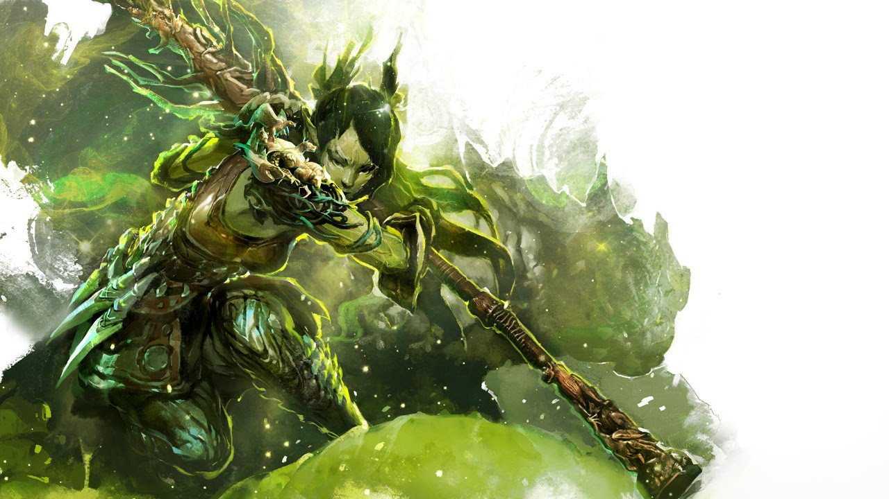

13.11.2018
Newsy | Zmainy w Mechanice Gry
Revamping Run i Sigili
Revamping Sigili i Run
Od 13 listopada będziemy się mogli cieszyć sporymi zmianami dotyczącymi run. Podstawowe kwestie, na które warto zwrócić uwagę to:
- Sigile i runy stają się salvageowalne. Zestawy rozkładające słabsze niż Black Lion Salvage Kit będą sigile i runy mieliły automatycznie, a co za tym idzie przestaną one zaśmiecać inventory.
- Produktem rozkładania będą:
- Lucent Motes - podstawowy surowiec, który możemy przetworzyć w Lucent Crystale (10 mote'ów -> 1 crystal)
- Symbole - rzadszy komponent potrzebny do craftowania run i sigili, wypada z mniejszym prawdopodobieństwem (szybki test na etapie pisania materiału pokazał, że ze stacka superior sigil of dreams rozłożonych mystic salvage kitem [Rare] wyciągnąłem 27 symboli, oraz 760 mote'ów. Od strony finansowej poroces ten jest nieopłacalny [ponad 25g inwestycji vs około 7g zwrotu]).
- Symbole będą dostępne w sześciu wariantach:
- Symbol of Control
- Symbol of Enhancment
- Symbol of Pain
- Symbol of Brilliance
- Symbol of Potence
- Symbol of Skill
- Runy i Sigile, które jak dotąd nie mogły być tworone poprzez crafting uzyskały własne recepty. Dla wariantu egzotycznego z grubsza wyglądają one tak:
- 5, 10, lub 15 Piles of Lucent Crystal
- 1,3,5, lub 10 sztuk składnika, który determinuje rodzaj produkowanej runy lub sigila(materiały T6, orby, charged ambrite etc)
- 1 - 3 Symbol of X
- 10 ecto
- Zmienione zostały także bonusy oferowane przez poszczególne rodzaje run i sigili. Na pewno oberwało się runie scholara (podstawowy upgrade component dla buildów typu power), a solidnego zbuffowania doczekały się ulepszenia zwiększające leczenie, ale na pełną ocenę wydajności będziemy musieli poczekać na werdykt wyspecjalizowanych gildii ([SC], [dT] )
- W rozrachunku ogólnym ceny run i sigili wzrosły, jednak bardziej opłacało się je sprzedać na etapie spekulacji niż po fakcie (tzn cena podniosła się gwałtownie, po czym opadła, ale w stosunku do stanu sprzed zmian jest obecnie wyższa).
- Pełna specyfikacja zmian w patch notes'ach na oficjalnym forum
Charytatywna akcja "The Extra Life"
W dniach od drugiego do trzeciego listopada trwała akcja charytatywnej zbiórki pieniędzy na rzecz chorych dzieci. W związku z tym każdy* kto zalogował się w pierwszym dniu eventu otrzymał tytuł "The Extra Life", oraz czasowy bonus do reward tracków z PvP i WvW, punktów doświadczenia, oraz magic finda. Ponadto w związku z uzbieraniem określonej kwoty w ramach akcji każdy z graczy, który zalogował się trzeciego listopada otrzymał również Endless Interface Crafter Golem Tonic.
* Wymagane było zalogowanie się na postać z minimum 15 poziomem.

Black Friday i promocja -50% na Guild Wars 2: Heart of Thorns i Guild Wars 2: Path of Fire
Trwa akcja wyprzedaży znana jako Black Firday. W jej ramach:
- Przecena -50% po wpisaniu na oficjalnej stronie kodu BlackFriday50 na zakup:
- Guild Wars 2: Path of Fire (promocja obowiązuje od 19 listopada do 5 grudnia)
- Guild Wars 2: Path of Fire + Heart of Thorns (promocja obowiązuje od 19 listopada do 5 grudnia)
- Ponadto zniżką 50% możemy cieszyć się również podczas kupowania pierwszej części gry za pośrednictwem platformy STEAM. Promocja obowiązująca od 21 do 27 listopada obejmuje:
- Guild Wars
- Guild Wars: Factions
- Guild Wars: Nightfall
- Guild Wars: Eye of the North
- Guild Wars Trilogy
Taka oferta to niewątpliwie gratka dla tych, którzy nie mieli jeszcze okazji zakupić pełnej wersji gry i wciąż dotkliwie odczuwają konsekwencje ograniczeń nałożonych na konta F2P.
Ponadto po zalogowaniu się do gry od czwartku do poniedziałku włącznie będziemy mogli zebrać darmowe bonusy. Wystarczy po zalogowaniu się wcisnąć "O" i odebrać darmowe przedmioty (tak jakbyśmy to kupowali po normalnej cenie - z tą jednak różnicą, że aktualna cena wynosi 0 gemów, możemy więc dokonać zakupu nie posiadając rzeczonej waluty).
22 listopada: 1x Heroic Booster23 listopada: 2x Black Lion Statuettes24 listopada: 5x Transmutation Charges- 25 listopada: 1x Revive Orb
- 26 listopada: 1x Black Lion Miniature Claim Ticket